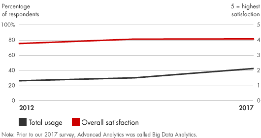
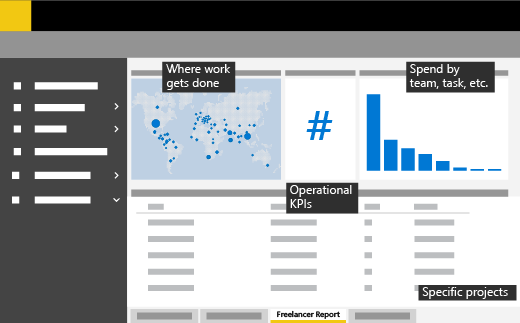

📘معرفی ابزار
تجزیه و تحلیل پیشرفته، استخراج سریع، انتقال، بارگیری، جستجو، تحلیل و به اشتراک گذاری مجموعه دادههای حجیم را ممکن میسازد. با تجزیه و تحلیل یک پایگاهداده بزرگ، یکپارچه و بلادرنگ، به جای یک پایگاه داده کوچکتر، مستقل و آفلاین، میتوان به دنبال شناسایی سریع همبستگی و الگوهای مشاهده شده قبلی برای بهبود تصمیمگیری بود. اگر چه این مربوط به مدیریت پایگاهداده سنتی و سیستمهای هوش کسبوکار است، اما تجزیه و تحلیل پیشرفته، توانایی پردازش دادهها را به چهار روش اصلی افزایش میدهد:
- حجم۱: پردازش حجم عظیم داده در سطح پتابایت و اگزابایت
- سرعت۲: بینش و اقدامات بلادرنگ بر روی جریان دادهها
- تنوع۳: تجزیه و تحلیل همه چیز از جریان کلیک تا جریان ویدیو
- نوسان۴: مدیریت تغییرات در فرمت دادهها و فیلدهای اطلاعاتی
نتایج تجزیه و تحلیل کلان دادهها به مدیران کمک میکند تا شاخصهای کلیدی کسبوکار خود را اندازهگیری کرده و مدیریت کنند.
🆕بهروزرسانی ۱۴۰۵
این بخش در نسخهٔ آنلاین ۱۴۰۵ افزوده شده است. متن اصلی کتاب (آبان ۱۳۹۹) در بخشهای بعد بدون تغییر آمده است.
آمار و شواهد تازه
- بر اساس نظرسنجی McKinsey (۱٬۹۹۳ پاسخدهنده، ژوئن–ژوئیه ۲۰۲۵)، سهم سازمانهایی که دستکم در یک کارکرد از هوش مصنوعی استفاده میکنند به ۸۸٪ رسیده؛ ده واحد درصد بیشتر از ۲۰۲۴. (منبع: McKinsey)
- ۶۲٪ از پاسخدهندگان دستکم در حال آزمایش عاملهای هوش مصنوعی (AI agents) هستند و ۲۳٪ گزارش میدهند در دستکم یک کارکرد در حال مقیاسدهی به یک سامانهٔ عاملیاند. (منبع: McKinsey)
- Bain نیز در گزارش فناوری ۲۰۲۵ هوش مصنوعی را مهمترین عامل برهمزننده دههٔ جاری مینامد و پیشرفت عاملها را سرخط تحول میداند. (منبع: Bain)
چه چیزی تغییر کرده؟
تحلیل پیشرفته در ۱۳۹۹ عمدتاً یعنی دادهکاوی و مدلهای پیشبینی. امروز همان فرآیند با هوش مصنوعی مولد (برای پرسش به زبان طبیعی از داده، خلاصهسازی و تولید کد تحلیلی) و عاملهای خودکار (که چند گام تحلیل و اقدام را بههم وصل میکنند) ترکیب میشود. گامهای «تعریف مسئله»، «کیفیت داده» و «اعتبارسنجی نتایج» همچنان تعیینکنندهاند؛ شکاف اصلی امروز نه دسترسی به مدل، بلکه مقیاسدهی و حکمرانی داده است.
نمونه ابزارها و نرمافزارهای امروزی
نامها صرفاً نمونهاند و توصیه یا تبلیغ تجاری نیستند؛ شرایط دسترسی و تحریمها را برای سازمان خود بررسی کنید.
منابع این بخش
🧩فرآیند اجرا
شرکتها باید ابتدا فرصتهای تجاری مهم را شناسایی کنند؛ سپس دادههای مرتبط با هر فرصت را جمع آوری کنند و تصمیم بگیرند که آیا به تجزیه و تحلیل پیشرفته نیاز دارند یا خیر. در صورتی که این نیازمندی تشخیص داده شود، توسعههای سختافزاری، نرمافزاری و مغزافزاری برای بکارگیری تجزیه و تحلیل پیشرفته مورد نیاز خواهد بود. این امر مستلزم بکارگیری کارشناسان علوم داده است که دارای مهارتهای کافی در پرسیدن سوالات مناسب، شناسایی منابع اطلاعاتی مقرونبهصرفه، پیدا کردن الگوهای صحیح و تبدیل بینش تحلیلی به اطلاعات کسبوکار قابل اجرا۵ میباشند.
برای استفاده از تجزیه و تحلیل پیشرفته؛ شرکتها باید اقدامات زیر را انجام دهند:
- انتخاب یک پایلوت (یک واحد یا یک گروه) با فرصتهای معنیدار برای سرمایهگذاری در تجزیه و تحلیل پیشرفته
- ایجاد یک گروه رهبری و تیمی از کارشناسان علوم داده با مهارت و منابع لازم
- شناسایی تصمیمات و اقدامات خاصی که میتوان بهبود بخشید
- بکارگیری راه حلهای سخت افزاری و نرم افزاری مناسب
- تصمیمگیری برای برونسپاری یا توسعه داخلی
- تصمیمگیری در خصوص اصول پایه مانند حریم خصوصی دادهها و سیاستهای امنیتی
- تست کنید، یاد بگیرید، به اشتراک بگذارید و اصلاح کنید
- توسعه مدلهای قابل تکرار و گسترش موارد کاربرد به دیگر واحدهای کسبوکار
💼موارد استفاده در کسبوکار
- بهبود فرآیندهای داخلی مانند مدیریت ریسک، مدیریت ارتباط با مشتری، زنجیره تأمین یا بهینه سازی محتوای وب
- بهبود محصولات و خدمات موجود
- ارائه محصولات و خدمات جدید
- ارایه پیشنهادات بهتر به مشتریان
- تغییر کلی مدل کسب و کار برای کسب درآمد از اطلاعات و بازخوردهای بلادرنگ
📈میزان محبوبیت در طی زمان

🧪نمونه ابزار / الگو

در این تصویر یک نمونه داشبورد تحلیل پیشرفته نشان داده شده است که لایه بندی عمومی مربوط به نرم افزار Power BI مایکروسافت میباشد. همچنین ابزارهای آنلاین فارسی نظیر http://vdash.ir در این خصوص قابل استفاده است.
⬇️چکلیست قابلدانلود
چکلیست اجرایی این ابزار را دانلود و در سازمان خود تکمیل کنید. گامها از فرآیند اجرای همین صفحه برداشته شدهاند و ستونهای مسئول، موعد و وضعیت برای پیگیری تیمی خالی گذاشته شده است.
⬇ دانلود چکلیست (Word) · تحلیل پیشرفته📚مراجع مطالعه بیشتر
- Bain & Company, Advanced Analytics: https://www.bain.com/insights/management-tools-advanced-analytics
- Microsoft, Tools and templates for data analytics, Start measuring business success through Power BI: https://docs.microsoft.com/en-us/freelancetoolkit/dataanalyticstools
- Baesens, Bart. Analytics in a Big Data World: The Essential Guide to Data Science and Its Applications. Wiley, 2014.
- Brea, Cesar A. Marketing and Sales Analytics: Proven Techniques and Powerful Applications from Industry Leaders. FT Press, 2014.
- Davenport, Thomas H., Jeanne G. Harris, and Robert Morison. Analytics at Work: Smarter Decisions, Better Results. Harvard Business Review Press, 2010.
- Isson, Jean-Paul, and Jesse Harriott. Win with Advanced Business Analytics: Creating Business Value from Your Data. Wiley, 2012.
- Laursen, Gert H. N., and Jesper Thorlund. Business Analytics for Managers: Taking Business Intelligence Beyond Reporting. 2d ed. Wiley, 2016.
- McAfee, Andrew, and Erik Brynjolfsson. “Big Data: The Management Revolution.” Harvard Business Review, October 2012.
- Shah, Shvetank, Andrew Horne, and Jaime Capella. “Good Data Won’t Guarantee Good Decisions.” Harvard Business Review, April 2012.
- Stubbs, Evan. The Value of Business Analytics: Identifying the Path to Profitability. Wiley, 2011.
معادلهای انگلیسی
- ۱Volume
- ۲Velocity
- ۳Variety
- ۴Variability
- ۵Actionable business information